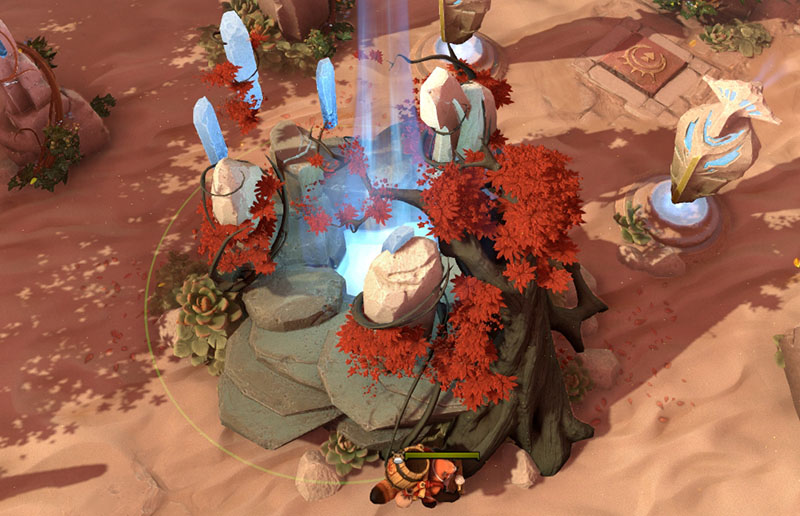
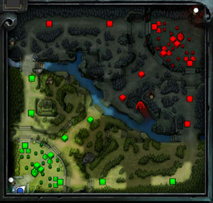
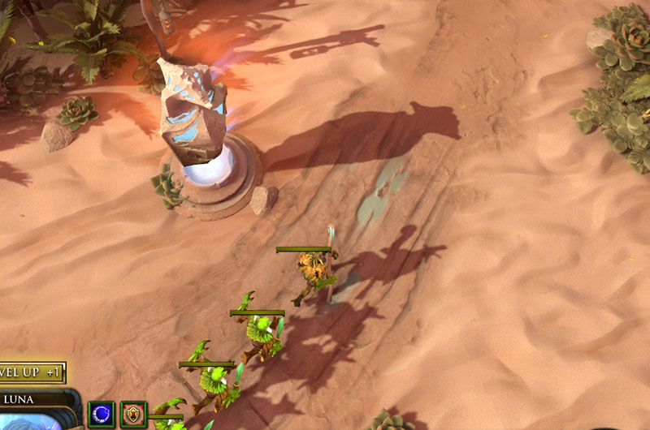
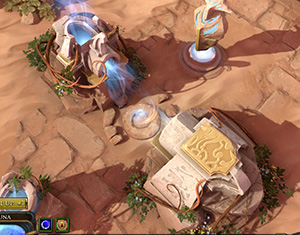
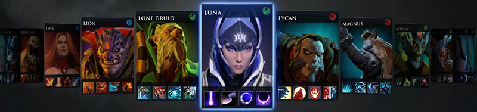
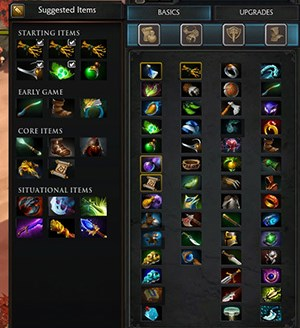

Reglas de Dota 2
El juego
Dota 2 es un juego online de a 10 jugadores, divididos en dos equipos de 5 heroes cada uno: Los Dire y los Radiant. Los equipos tienen su base principal en cada punta del mapa, donde se encuentra su Ancient. El objetivo principal del juego es destruir el Ancient enemigo.
Esto no es tarea fácil, ya que el mapa es enorme, y en medio hay torres enemigas que defienden este Ancient, sin hablar de los otros jugadores.
El mapa
El mapa está dividido en 3 "lanes" o carriles, en cual cada uno tiene 3 torres. Para destruir la segunda torre hay que destruir antes la primera, y para destruir la tercera hay que destruir la segunda.
Esto es por cada equipo, es decir, del lado de tu equipo también van a haber 3 lanes que tiene cada una 3 torres, las cuales en vez de atacarte a vos, atacan a los enemigos.
Para lograr destruir estas torres, el juego tiene unidades que se llaman "creeps". Estos creeps aparecen cada 30 segundos en ambas bases y se dividen entre las 3 lanes, corriendo y luchando con lo que se encuentren. Cuando los creeps de ambos equipos se encuentran, empezarán a luchar entre sí. El jugador puede ayudarlos y hacer lo que se llama un "push de linea", que es atacar a los creeps enemigos, y así lograr que los creeps aliados lleguen a una torre enemiga para destruirla.
Las torres son muy fuertes, y fácilmente pueden matar a un heroe en menos de 5 segundos si no corre hacia una posición más segura. Por suerte atacan de a un sólo objetivo, por lo cual la estrategia es hacer que ataque a los creeps aliados mientras el heroe le pega hasta destruirla. Generalmente se necesitan varios push de linea para lograr esto.
 Una vez que se destruyen las 3 torres de una lane, se pueden romper las barracks de esa lane. Las barracks son dos torres que no atacan, ubicadas ya dentro de la base enemiga, y es por donde aparecen los creeps. Una se llama Ranged Barrack y la otra Melee Barrack. Si se destruye la melee, tus creeps que atacan cuerpo a cuerpo se vuelven más fuertes. Si se destruye la ranged, tus creeps que atacan de rango se vuelven más fuertes. Si se destruyen las 6 barracks, tus creeps se vuelven "Mega creeps", que son super fuertes y duraderos, prácticamente imparables.
Finalmente, hay dos torres que atacan y están ubicadas al lado del Ancient. Una vez que estas dos torres son destruidas, se puede empezar a atacar y destruir el Ancient.
Héroes
Los héroes son las unidades controladas por los jugadores. Al comienzo de la partida cada uno de los 10 tiene que seleccionar un héroe de los 111 que hay actualmente. Cada uno tiene habilidades únicas y no puede repetirse con ninguna selección que haya hecho algún otro jugador.
Cada héroe tiene al menos 3 habilidades básicas y una última habilidad que es muy poderosa. Para poder desbloquear estas habilidades hay que ganar experiencia, matando creeps, heroes enemigos o destruyendo torres. Una vez que se sube de nivel, se puede elegir una de las 3 habilidades básicas para aprender, o una habilidad ya aprendida para subirla de nivel. Cada habilidad cuenta con 4 niveles, excepto la ultimate que cuenta con 3.
La ultimate ability, o habilidad última, se concede cuando el héroe consigue la suficiente XP para llegar a nivel 6 y generalmente es determinante en las partidas. Es muy poderosa, la que caracteriza al personaje, pero generalmente hay que esperar mucho tiempo entre usos.
El tope máximo de nivel de los heroes es el nivel 25.
En el juego existen 3 atributos principales: Fuerza, agilidad e inteligencia. Cada punto de fuerza provee durabilidad y regeneración de vida; la agilidad armadura y velocidad de ataque; y la inteligencia mana, regeneración de mana y amplificación de daño de hechizos. Cada héroe tiene un atributo principal, y además de ofrecerle alguno de esos bonus, cada punto aumenta el daño de sus ataque.
Los heroes ganan puntos de estos atributos cada vez que suben de nivel (cada uno sube cada uno de los atributos de forma diferente), pero también se pueden conseguir por medio de items.
El mapa cuenta con varias tiendas en las cuales con el oro ganado se pueden comprar items, que proveen atributos, bonus o características particulares que pueden cambiar completamente el rumbo de una partida. Cada héroe puede llevar 6 items, y muchos de estos son combinables entre sí.